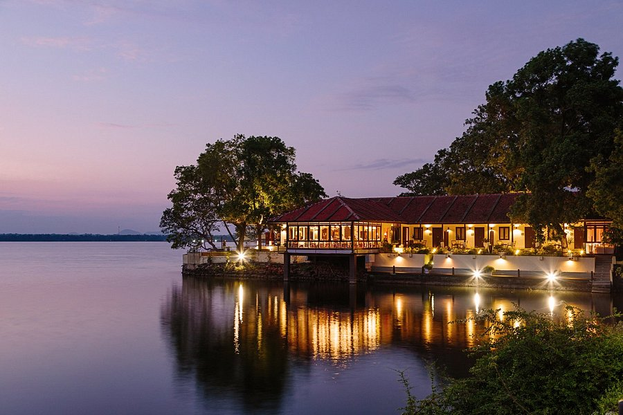

Gallery



Following the destruction of Anuradhapura in 993 AD, Polonnaruwa, Sri Lanka's second most ancient kingdom, became the country's capital. Between the 12th and 13th centuries, numerous civilisations, including the Cholas, South Indian Hindus, and Buddhist Sinhalese, passed through this kingdom, which was built by King Parakramabahu I.
The sacred quadrilateral is formed by an outstanding assemblage of ruins, with the vatadage (old structure) in the center, with four gates leading to the location where the Sacred Tooth Relic was previously placed. Explore the monks' lodgings and the enormous stupa (hemispheric building containing relics) Rankot Vihara. Dagaba Kiri Vihara is a perfectly preserved dagaba that is lovingly repainted by devotees every year before the Vesak Poya (a festival honoring Buddha's birth, enlightenment, and nirvana) (Vesak Poya is celebrated in May at full moon and is a festival honoring Buddha's birth, enlightenment, and nirvana). Admire the huge 17m (55ft) Buddha statue at Lankatilaka and complete your journey in front of four Buddha statues cut from a single piece of granite at Gal Vihara.